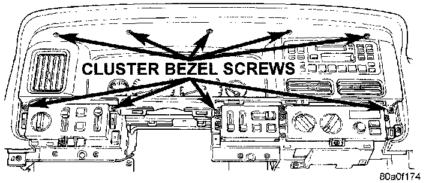
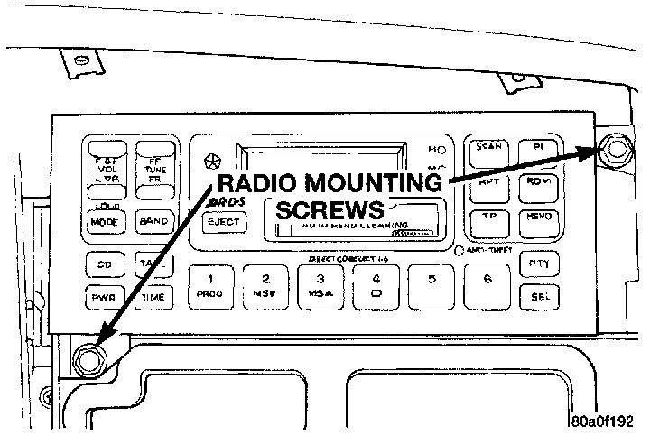
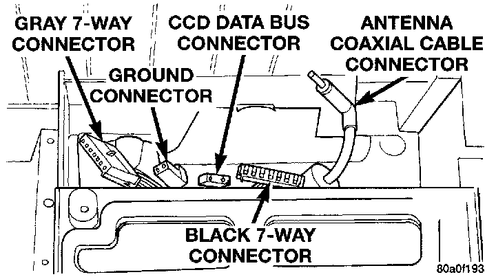

Radio
REMOVALWARNING: ON VEHICLES EQUIPPED WITH AIRBAGS, REFER TO AIR BAGS AND SEAT BELTS/AIR BAGS BEFORE ATTEMPTING STEERING WHEEL, STEERING COLUMN, OR INSTRUMENT PANEL COMPONENT DIAGNOSIS OR SERVICE. FAILURE TO TAKE THE PROPER PRECAUTIONS COULD RESULT IN ACCIDENTAL AIRBAG DEPLOYMENT AND POSSIBLE PERSONAL INJURY.
1. Disconnect and isolate the battery negative cable.
2. Using a trim stick or other suitable wide flat bladed tool, pry gently around the edges of the instrument panel switch pod bezels and remove both bezels.
Cluster Bezel Screws Remove/Install:

3. Remove the ten screws that secure the cluster bezel to the instrument panel.
4. Pull the cluster bezel rearward and move it outboard of the steering wheel to remove it from the vehicle.
Radio Remove/Install:

5. Remove the two radio mounting screws from the front of the radio.
Radio Connectors:

6. Pull the radio out from the instrument panel far enough to unplug the wire harness connectors and the antenna coaxial cable connector.
7. Remove the radio from the instrument panel.
8. Reverse the removal procedures to install.